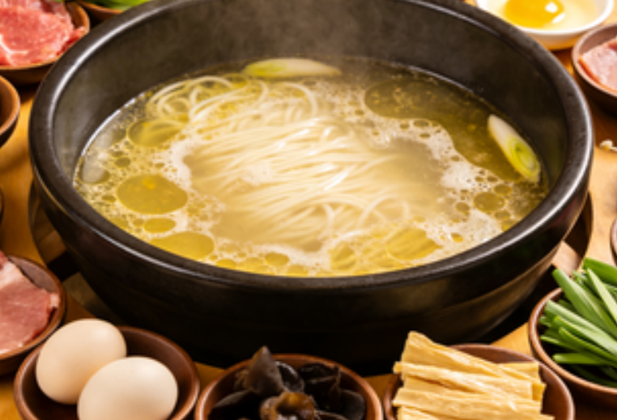
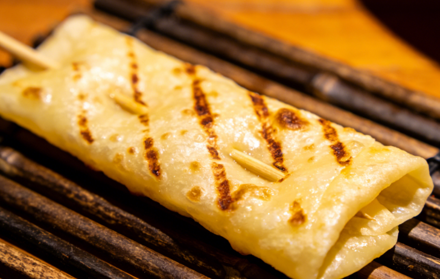
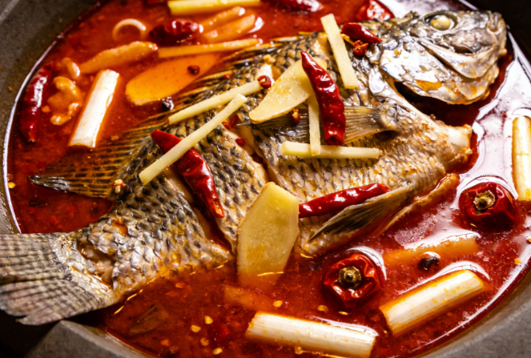
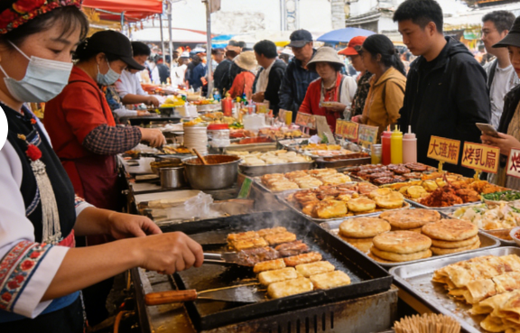

Flavors of Dali
Flavors of Dali
Dali's cuisine is a delightful reflection of its diverse cultural heritage. Drawing from Bai traditions, Yunnan's rich agricultural bounty, and influences from neighboring regions, the food of Dali offers an unforgettable gastronomic experience. From sour and spicy cold noodles to slow-cooked stews, every dish tells a story of the land and its people.

Crossing-the-Bridge Noodles
The most famous dish in Yunnan, this elaborate rice noodle soup features a piping-hot chicken broth served with dozens of fresh ingredients including sliced pork, chicken, quail eggs, tofu skin, and vegetables that are cooked right at the table in the boiling broth.

Milk Fan (Rushan)
A signature Bai snack made from stretched and dried milk curd. This crispy, cheese-like delicacy is typically grilled over charcoal and served with sweet or savory toppings such as rose jam, condensed milk, or a sprinkle of sugar.

Sour and Spicy Fish
Erhai Lake fish cooked in a tangy, fiery broth made with local pickled cabbage, chili, and garlic. The combination of fresh-caught fish with the distinctive sourness of Yunnan fermentation creates an addictive flavor profile unique to the region.



The Art of Bai Tea
Tea is woven into the fabric of daily life in Dali. The traditional Bai "Three-Course Tea" ceremony (Sandao Cha) is an essential cultural practice that symbolizes the philosophy of life. The first course is bitter tea, representing the hardships of youth; the second is sweet tea with walnuts and brown sugar, symbolizing the rewards of perseverance; the third is an aftertaste tea with honey and cassia, representing the wisdom gained through experience.
Dali's proximity to the Ancient Tea Horse Road means the region has been a center of tea cultivation and trade for centuries. Local tea varieties, including the distinctive Yunnan Pu'er, are grown on the misty slopes of Cangshan Mountain and are prized by tea connoisseurs worldwide.
Seasonal Delicacies